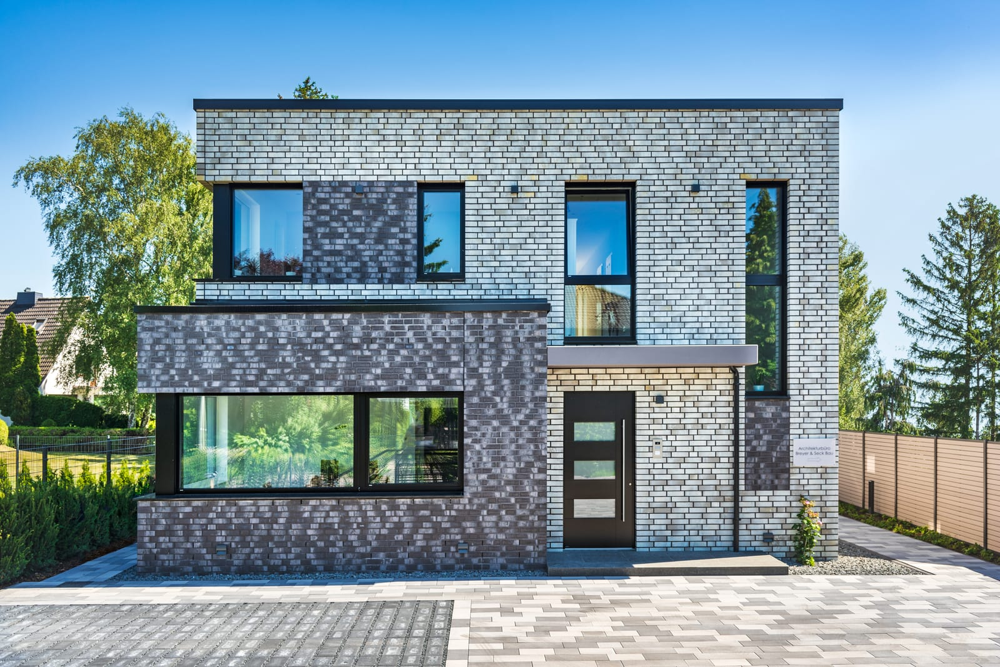

Referenz · Fertiggestellt & verkauft
HAW 39
Klare Architektur. Besondere Lichtmomente.

Das Projekt
Markanter Klinker. Lichtvolle Räume.
Im Projekt HAW 39 entstand ein Haus mit zwei Wohneinheiten. Helle und dunkle Klinkerflächen gliedern die Fassade, während große Fenster die Räume zum Garten öffnen. Am Abend betont die Beleuchtung die klare Form des Gebäudes. Das Projekt ist fertiggestellt und verkauft.
- Wohneinheiten
- 2
- Geschosse
- 2
- Projektstatus
- Verkauft
Drohnenflug rund um das Haus im Projekt HAW 39
Einblicke
Architektur im Detail.
8 Aufnahmen · zum Vergrößern antippen
Architektur und Atmosphäre
Ein Haus. Viele Perspektiven.
Von der markanten Klinkerfassade bis zu den hellen Innenräumen setzt sich die klare Gestaltung fort. Großzügige Fensterflächen und die gezielte Außenbeleuchtung geben dem Haus bei Tag und am Abend einen eigenen Ausdruck.